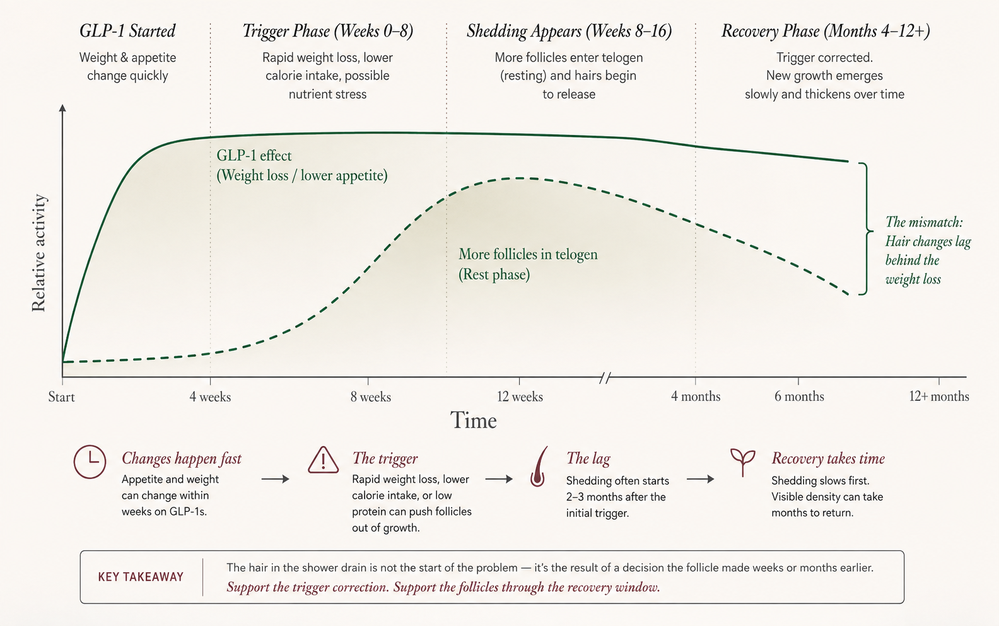
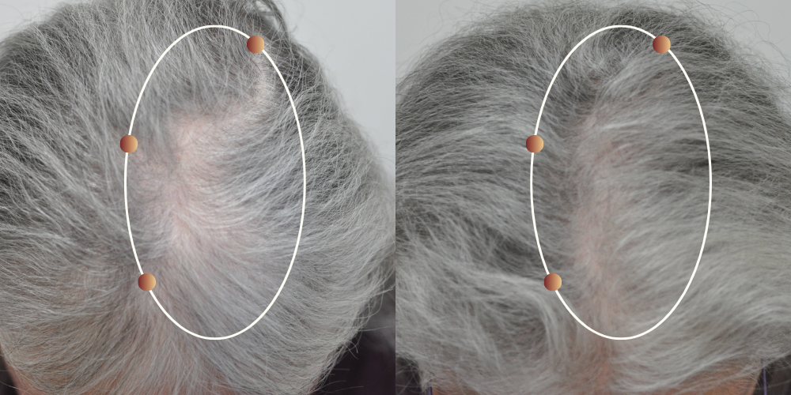
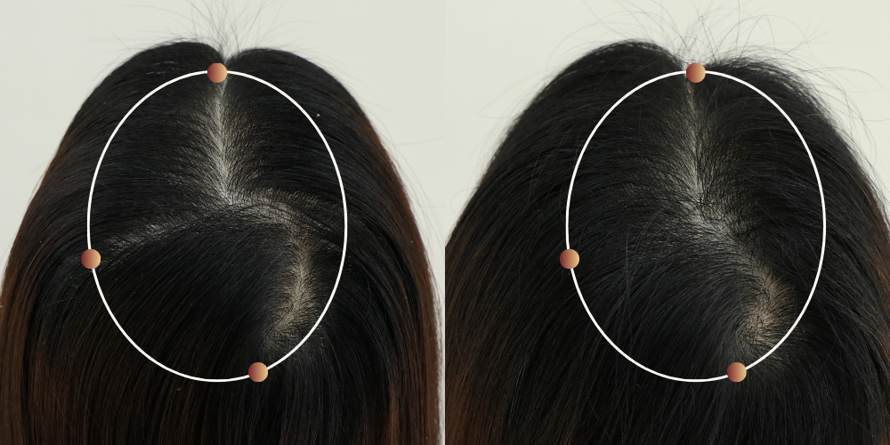
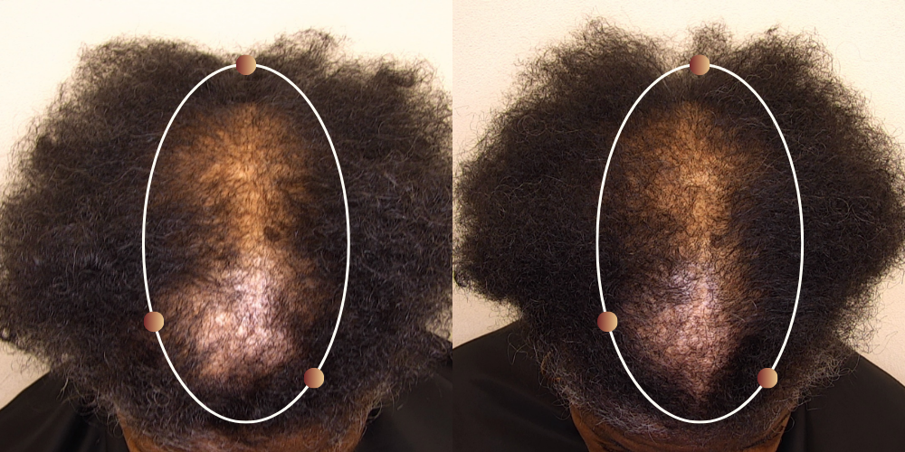

When more hair started collecting in the shower months into GLP-1 weight loss, the timing made it feel as though something new had suddenly gone wrong. The hair cycle told a different story: visible shedding can be a delayed record of an earlier change, while visible density can take much longer to catch up.
The follicle changes phase before the hair falls.
Hair does not grow continuously. Each follicle spends most of its time in an active growth phase called anagen. It then transitions into a resting phase, telogen, before the old strand is released. Normally, follicles run on staggered schedules, so everyday loss never arrives all at once.
Rapid weight loss or a sharp change in intake can cause more follicles than usual to leave active growth within the same window. But changing phase does not make the hair fall immediately. The old strand can remain in place while the follicle moves through its resting period.
Only after that resting period does the strand release. If many follicles shifted around the same time, many hairs can also reach the shedding step around the same time—often two to three months after the change that started it. The delay exists because falling is the last visible step in the process, not the first.

Putting the sequence on a timeline made the experience much easier to read. The appetite and weight changes came first. The shedding appeared later, after the affected hairs had already moved through their resting period.
A heavy wash day was therefore not proof that something new had started that morning. I needed to look back at the weeks when my weight was falling fastest and eating had become noticeably harder.
There was another lag on the other side. Even after the original trigger settled, a follicle still had to return to active growth, form a new strand, and grow it long enough to change what I saw in the mirror.
Not exactly. Recovery could be supported from two sides.
I could not pull hairs already completing the shedding process back into growth. But the next stage did not have to feel entirely passive.
If weight was still falling quickly or I was struggling to eat enough, that came first. Support meant reviewing the pace with my clinician, getting adequate food and protein, and correcting a real shortfall rather than reaching for a generic hair vitamin.
Even after the trigger settled, density would lag while follicles began another growth phase and new strands gained length. This was where I wanted a solution designed to support the follicle during that slower window.
I added RE:YOU alongside the body-side work. Its focus on follicle biology matched the recovery problem I was trying to solve, and the finished serum had clinical data on both shedding and density.
It is designed for the part of recovery happening below the surface.
For density to return, a follicle has to resume active growth and produce a new strand that can keep growing. Dermal papilla cells at the base of the follicle help coordinate that process, including signals related to growth and strand thickness. Their surrounding tissue also matters because those cells need a supportive local environment to function.
RE:YOU’s three NOVOGRO™ molecules are designed around both parts of that system: supporting activity within the follicle and the environment around it. In practical terms, the goal is to support the follicle as it produces new growth, rather than make the existing hair look temporarily fuller.
The clinical data moved it from interesting to worth trying.
RE:YOU was tested for 90 days in a randomized, double-blinded trial involving 190 women with visible thinning, with minoxidil included as the active comparison. The study combined scalp imaging with measured shedding, expert assessment, and participant feedback.
Those outcomes match the two parts of the recovery gap that mattered to me: controlling excess shedding while supporting density as the hair cycle catches up.



Images and data from RE:YOU’s 90-day clinical study. Individual results vary.
Read more about RE:YOU’s clinical study →It became a routine I could actually keep.
I used one to two droppers on a dry scalp once daily and massaged it in for about 30 seconds. The water-based serum absorbed quickly and did not leave my part looking oily, which mattered because that was already the area I watched most closely.
I took baseline photos in the same bathroom light and checked them monthly instead of trying to interpret every wash day. By the end of the 90-day window, the drain felt less alarming and short regrowth along my part was easier to see. I kept using RE:YOU after the initial trial because the routine was simple and the progress looked gradual rather than cosmetic.
Hair shedding can improve as its original trigger settles, so I would not claim that one serum acted alone. What I can say is that RE:YOU was the follicle-side step I used consistently throughout recovery, and the experience matched the reason I chose it: to support density while the hair cycle caught up.
I kept RE:YOU in my routine after day 90.
The delay explained why the shedding appeared when it did; RE:YOU gave me a practical way to support the slower phase that followed. I handled the body side by getting honest about intake and how quickly my weight was changing, then used the serum daily for the follicle side. By the time I could see progress in the same-light photos, it no longer felt like a 90-day experiment. It had become part of my routine.
The practical questions I still had
Can a serum stop hairs that have already entered the shedding process?
That is not a realistic expectation. A strand released today may have left active growth weeks earlier. The more useful questions are whether the original trigger is still present and what role, if any, a topical could play during the next growth cycle.
How long can density take to look normal again?
There is no single deadline. Shedding often settles over months after the trigger is removed, while visibly meaningful density can take longer because replacement hairs must emerge and gain length. A dermatologist can reassess if the trend is not improving or the pattern does not fit TE.
Should I stop my GLP-1 because of shedding?
Not without speaking to the clinician who prescribed it. They can weigh the shedding against the reason for treatment and review whether the pace of weight loss, intake, or another medical issue needs attention.
When should I see a dermatologist?
Seek an evaluation for patchy loss, scalp pain or inflammation, obvious pattern thinning, loss of brows or lashes, or shedding that remains heavy without a clear recovery trend. Those details can point away from uncomplicated acute TE.
Evidence notes: The hair-cycle and recovery discussion is based on published reviews of telogen effluvium. RE:YOU clinical figures, study images, and product details are sourced from its science and product pages.
Note: This article is educational and does not replace medical advice. Individual results vary.